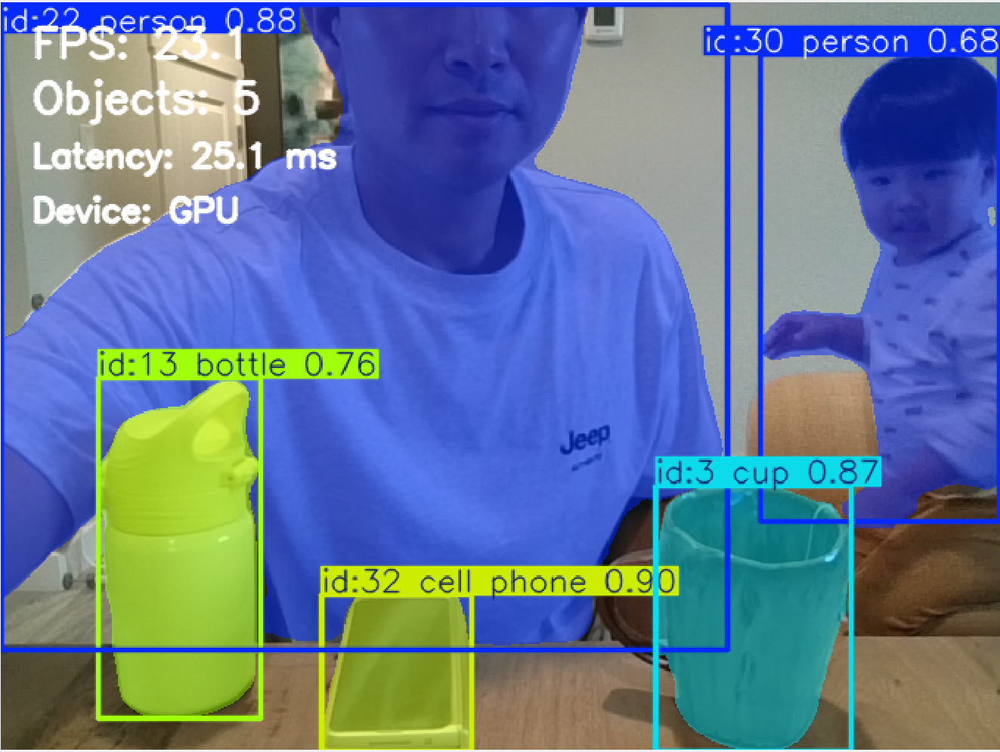
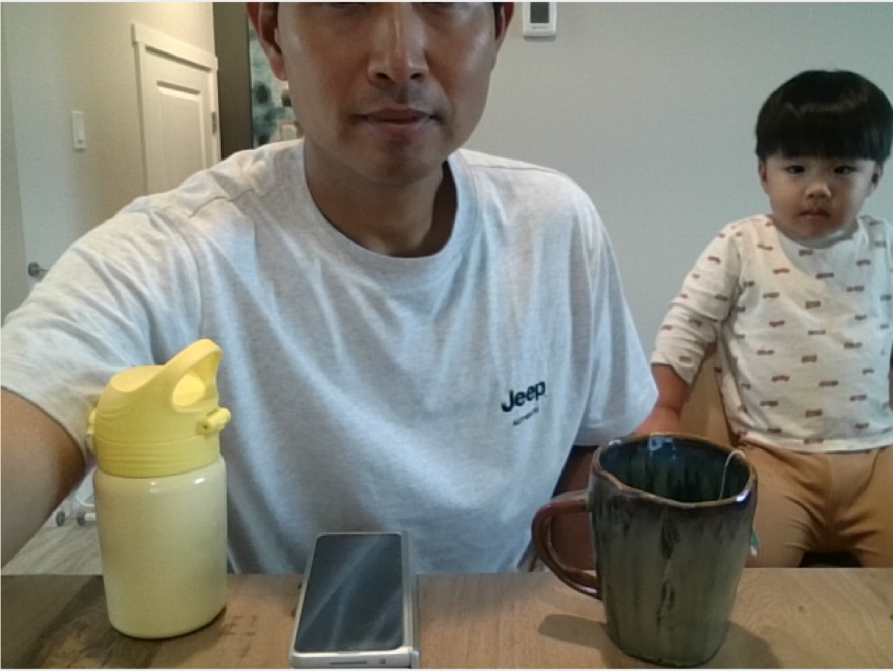
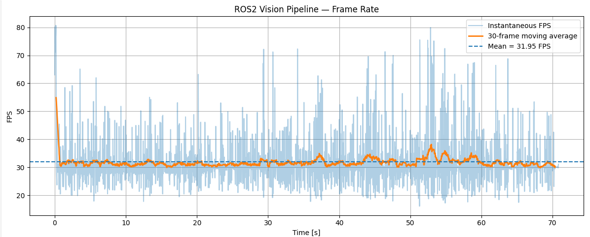
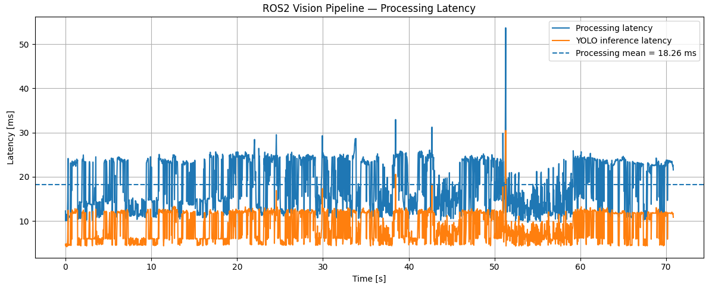
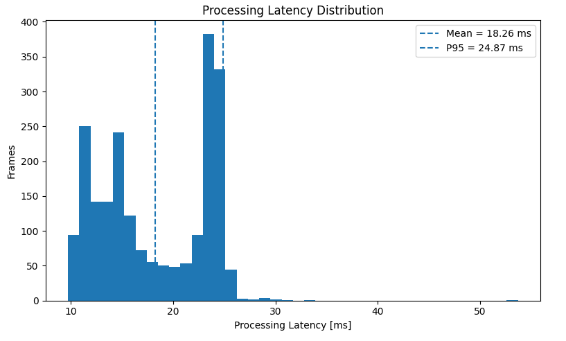
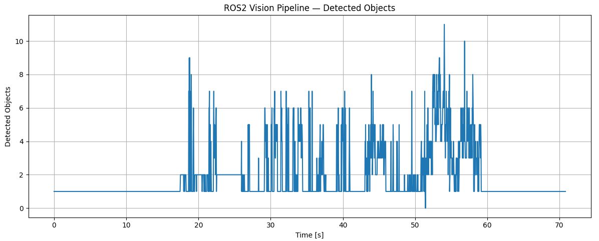

Robotics Portfolio Project 02
ROS 2 Vision Perception Pipeline
A real-time ROS 2 perception system that converts live RGB camera data into object-level spatial information through detection, persistent tracking, and instance segmentation, with GPU-accelerated inference and quantitative runtime evaluation.
Demo
Demo footage is shown for qualitative visualization. Quantitative results below are taken from a separate 2,136-frame benchmark run.
1. Project Objective and Robotics Use Case
A camera produces a high-bandwidth stream of pixels, but a robot cannot make useful decisions from raw RGB values alone. For navigation, manipulation, human-aware motion, scene monitoring, or sensor fusion, the perception layer must convert images into structured information: what objects are present, where they are, which detections belong to the same physical object over time, and which image pixels belong to each object.
The purpose of this project was therefore not simply to run a pretrained neural network. It was to build the vision front-end as a ROS 2 subsystem that could later feed a larger autonomous robot architecture. Detection provides class and bounding-box information; tracking adds temporal identity; instance segmentation adds object-level pixel geometry. Those outputs can subsequently support obstacle reasoning, target selection, human or object tracking, visual servoing, depth/LiDAR association, and higher-level planning.
The implementation was intentionally built as an integration and systems-engineering exercise. Instead of spending the project on custom model training, pretrained weights were used so that the main engineering questions could be examined directly: ROS 2 image transport, GPU inference, temporal tracking, segmentation, visualization, runtime instrumentation, and reproducible benchmark analysis.

2. Technology Selection and Design Rationale
Several perception stacks can solve parts of the same problem. The selected combination was chosen for rapid ROS 2 integration, real-time execution on an NVIDIA laptop GPU, availability of pretrained models, and the ability to perform detection, segmentation, and tracking through one practical Python-facing framework.
2.1 Object Detection / Perception Model
| Approach | Strengths | Trade-offs | Relevance to This Project |
|---|---|---|---|
| Ultralytics YOLO | Single practical interface for detection, segmentation, pretrained models, GPU inference, and video tracking workflows. | Accuracy and speed depend on model size and task; pretrained general-purpose classes are not application-specific. | Selected. It allowed the project to concentrate on ROS 2 integration and real-time system behavior rather than building separate perception frameworks. |
| Faster / Mask R-CNN | Strong region-based detection; Mask R-CNN adds instance masks. | Typically a heavier two-stage design and less convenient for a lightweight real-time prototype. | Relevant when maximum task accuracy or a custom training pipeline is more important than compact real-time integration. |
| SSD-family detectors | One-stage detection with relatively simple real-time deployment. | Would require a separate segmentation solution and tracking integration for the full project scope. | Viable for detection-only robotics applications, but less convenient for this combined pipeline. |
| DETR / RT-DETR family | Transformer-based object detection with end-to-end set prediction; real-time variants are available. | Different deployment and model-selection trade-offs; segmentation/tracking still require additional design choices depending on the implementation. | A useful alternative for future detector benchmarking, but not necessary for the first ROS 2 integration baseline. |
2.2 Why Instance Segmentation?
Bounding boxes indicate approximate object location, but many robotics tasks require object shape at pixel level. Semantic segmentation assigns a class to each pixel but does not inherently distinguish two separate objects of the same class. Instance segmentation provides both class information and a separate mask for each object, which fits naturally with object tracking because each tracked entity can retain both an identity and a spatial footprint.
| Method | Output | When It Is Useful |
|---|---|---|
| Object detection | Class + bounding box | Fast coarse localization and recognition. |
| Semantic segmentation | Class label for every pixel | Road / floor / terrain or other class-level scene understanding. |
| Instance segmentation | Class + object-specific pixel mask | Selected. Preserves individual object identity and geometry for tracking and future robot interaction. |
| Foundation segmentation models | Prompt- or image-conditioned masks | Flexible segmentation, but potentially unnecessary model and compute complexity for a fixed real-time ROS 2 demonstration. |
2.3 PyTorch, CUDA, and Deployment Alternatives
PyTorch was used because the Ultralytics Python stack integrates directly with it and because CUDA-enabled PyTorch can execute model tensors on the NVIDIA GPU without an additional model-conversion stage. For a development project this keeps the path from model loading to ROS 2 inference transparent and easy to debug.
| Runtime | Advantages | Why / Why Not Here |
|---|---|---|
| PyTorch + CUDA | Direct Python development, mature GPU support, easy Ultralytics integration. | Selected. Best fit for rapid development, instrumentation, and debugging on the RTX laptop GPU. |
| CPU inference | Simple deployment with no discrete GPU dependency. | Useful as a portability baseline, but not selected because the project explicitly evaluates real-time GPU perception. |
| ONNX Runtime + CUDA | Portable inference runtime with hardware-specific execution providers. | Good deployment option after model export; adds another conversion/runtime layer that was not needed for the development baseline. |
| TensorRT | NVIDIA-optimized inference and potential latency/throughput improvements. | Attractive for deployment optimization, but engine export/build and deployment tuning would shift the project away from ROS 2 perception integration. |
| Intel OpenVINO | Optimized inference on supported Intel CPU/GPU/NPU platforms. | Relevant for Intel edge hardware, but not the natural first choice for an NVIDIA RTX test platform. |
3. System Architecture
Webcam
│
▼
camera_publisher
│
└── /camera/image_raw [sensor_msgs/msg/Image]
│
├──────────────► yolo_detector
│ │
│ └── /vision/detection_image
│ [sensor_msgs/msg/Image]
│
├──────────────► segmentation_node
│ │
│ └── /vision/segmentation_image
│ [sensor_msgs/msg/Image]
│
└──────────────► unified_perception
│
├─ detection / class confidence
├─ persistent object tracking
├─ instance-mask generation
├─ visualization overlays
└─ runtime performance logging
│
▼
/vision/unified_image
[sensor_msgs/msg/Image]
The component nodes were useful during development because detection/tracking and
segmentation could be tested independently. The final demonstration uses
unified_perception, which combines the functions into one inference path and
publishes a single annotated image. This is why only
/camera/image_raw and /vision/unified_image were visible in the
final rqt demonstration even though the package defines additional component-level topics.
4. ROS 2 Nodes and Data Interfaces
4.1 Node Responsibilities
| Node | Input | Processing | Output / Role |
|---|---|---|---|
camera_publisher |
Local webcam frames through OpenCV | Captures BGR images, converts them through cv_bridge, and publishes ROS 2 image messages at approximately 30 Hz. |
/camera/image_raw; common image source for all perception nodes. |
yolo_detector |
/camera/image_raw |
Runs object detection and temporal tracking, draws boxes, class/confidence information, and track IDs. | /vision/detection_image; component-level detection/tracking visualization. |
segmentation_node |
/camera/image_raw |
Runs the segmentation-capable model and renders object-specific masks. | /vision/segmentation_image; component-level segmentation visualization. |
unified_perception |
/camera/image_raw |
Combines tracking and instance segmentation in one inference path, adds visualization overlays, measures timing, counts objects, and records benchmark data. | /vision/unified_image; final demonstration output. |
4.2 ROS 2 Topics and Message Types
| Topic | Message Type | Publisher → Subscriber / Use | Status |
|---|---|---|---|
/camera/image_raw |
sensor_msgs/msg/Image |
camera_publisher → perception nodes; raw RGB/BGR camera stream transported through ROS 2. |
Used in final demo. |
/vision/detection_image |
sensor_msgs/msg/Image |
yolo_detector → visualization; boxes, labels, confidence, and tracking information rendered into an image. |
Component-development output. |
/vision/segmentation_image |
sensor_msgs/msg/Image |
segmentation_node → visualization; instance masks rendered over the camera image. |
Component-development output. |
/vision/unified_image |
sensor_msgs/msg/Image |
unified_perception → rqt / visualization; combined tracking, masks, labels, and runtime diagnostics. |
Used in final demo. |
5. Technical Implementation
5.1 Camera Acquisition
OpenCV acquires the webcam stream through cv2.VideoCapture. Each frame is
converted to sensor_msgs/msg/Image using cv_bridge. The camera
publisher targets approximately 30 Hz, establishing the input rate seen by the downstream
perception nodes.

/camera/image_raw before neural-network
inference or visualization overlays are applied.
5.2 Detection, Tracking, and Instance Masks
For every incoming frame, the segmentation-capable YOLO model produces object localization, class labels, confidence values, and object masks. Persistent tracking associates detections across frames so that an object can retain a track ID while it moves through the scene. The unified node then renders these outputs together rather than launching separate detection and segmentation inference passes.
5.3 Runtime Instrumentation
The benchmark records an observed frame-rate estimate, total processing latency, YOLO inference latency, and detected-object count for each processed frame. The first frame is excluded from steady-state statistics because model initialization, memory allocation, and GPU warm-up produce a one-time timing condition that is not representative of continued operation.
6. Experimental Setup and Benchmark Method
Hardware
- NVIDIA GeForce RTX 5060 Laptop GPU
- Integrated webcam input
Software
- Ubuntu 22.04
- ROS 2 Humble
- Python 3.10
- PyTorch 2.11.0 + CUDA 12.8
- Ultralytics 8.4.147
- OpenCV 4.10.0
- NumPy 1.26.4
The camera publisher was configured at approximately 30 Hz. A total of 2,136 steady-state frames were analyzed after excluding the first initialization frame. The benchmark was designed to characterize runtime behavior of the complete ROS 2 perception path rather than to measure detector accuracy against a labeled dataset. Accordingly, the reported metrics quantify timing, throughput behavior, and scene load; they do not represent mAP, segmentation IoU, or tracking-accuracy scores.
7. Quantitative Results and Engineering Interpretation
| Metric | Measured Result | What It Means | Engineering Interpretation |
|---|---|---|---|
| Analyzed frames | 2,136 | Number of steady-state frames included after the initialization frame was removed. | Large enough to observe sustained timing behavior and transient jitter, although it is not a formal long-duration stress test. |
| Average observed FPS | 31.95 FPS | Observed callback/frame-processing rate across the logged sequence. | Consistent with a camera publisher configured near 30 Hz. It should not be interpreted as the model's unrestricted maximum inference throughput. |
| Minimum / maximum observed FPS | 16.09 / 80.69 FPS | Extremes of instantaneous frame-interval-derived FPS. | Short callback intervals and scheduling jitter can create unusually high or low instantaneous reciprocal-FPS values. The moving average is more representative of sustained operation. |
| Average processing latency | 18.26 ms | Average time spent by the complete per-frame perception path measured by the node. | Well below the 33.3 ms period of a nominal 30 Hz stream, providing processing headroom for the tested configuration. |
| P95 processing latency | 24.87 ms | 95% of measured frames completed at or below this processing time. | Still below 33.3 ms, indicating that typical high-latency frames remained within one nominal 30 Hz camera period. |
| Average YOLO inference latency | 8.70 ms | Average time attributed to neural-network inference. | About 47.6% of the 18.26 ms average total processing time. The remaining average time includes non-inference work such as frame conversion, tracking/postprocessing, mask/box rendering, bookkeeping, and ROS-side handling. |
| P95 YOLO inference latency | 12.52 ms | 95% of inference measurements completed at or below this value. | Shows that the neural-network stage itself remained comfortably below the camera period. P95 inference and P95 total processing are separate distributions and should not be directly subtracted. |
| Average objects per frame | 1.83 | Mean number of detections processed in each benchmark frame. | The sequence was generally lightly populated, so the benchmark represents a modest average scene load rather than persistent worst-case crowding. |
| Maximum objects in one frame | 11 | Highest simultaneous detected-object count observed during the test. | Confirms that the pipeline encountered periods with substantially higher scene complexity, but this statistic alone does not establish how much object count affected latency. |
8. Benchmark Analysis
8.1 Frame-Rate Stability

The instantaneous signal varies much more than the moving average. That is expected when FPS is derived from short inter-frame or callback intervals: operating-system scheduling, ROS 2 executor timing, camera delivery, Python execution, and measurement resolution can perturb individual intervals. Because FPS is the reciprocal of a small time interval, even modest timing variation can produce apparently large instantaneous spikes such as the recorded 80.69 FPS maximum.
The 30-frame moving average remains near the configured camera rate and is therefore a more useful indicator of sustained pipeline behavior. The correct conclusion is not that the model continuously runs at 80 FPS, but that the perception node keeps pace with the approximately 30 Hz input stream while experiencing normal short-term callback jitter.
8.2 Processing and Inference Latency

The inference trace is consistently below the total-processing trace because inference is only one stage of the callback. On average, YOLO inference accounts for 8.70 ms of the 18.26 ms total, or approximately 47.6% of measured processing time. The remaining time is associated with the rest of the perception path: image conversion and transfer, tracking/postprocessing, mask and bounding-box rendering, metric collection, and ROS-facing handling.
Both traces vary over time rather than remaining perfectly constant. GPU kernel scheduling, memory operations, changes in detections/masks, visualization cost, Python/ROS executor timing, and other system activity are plausible contributors. The current instrumentation measures aggregate stages rather than each contributor independently, so the plot supports identification of runtime variability but not a single causal attribution.
8.3 Processing-Latency Distribution

The histogram shows that frame-processing time is concentrated in more than one visible operating band rather than following one narrow unimodal cluster. The mean of 18.26 ms describes the center of overall workload, while the 24.87 ms P95 value is more useful for assessing near-worst-case routine behavior because it captures the upper tail without being dominated by isolated extremes.
A bimodal-like distribution can arise when the pipeline alternates between different execution conditions—for example, different tracking or mask-rendering workloads, GPU/CPU scheduling states, or scene complexity. However, the existing CSV does not separately log all of those internal stages. The defensible conclusion is therefore that multiple timing regimes are visible; identifying their exact cause would require stage-level profiling or controlled experiments.
8.4 Detected Object Count and Scene Load

The object-count trace confirms that the benchmark was not performed under one fixed scene condition. Most frames contained relatively few objects, but the scene periodically became more complex and reached 11 simultaneous detections. This matters because postprocessing, tracking association, mask handling, and rendering work can change with the number and geometry of detections even when the core neural-network input size is fixed.
The current plots should not be used to claim that object count caused the latency variation, because a frame-by-frame correlation or controlled load experiment was not performed. A logical next analysis would align object count and latency per frame and compute correlation or stratified latency statistics for different object-count ranges.
9. Execution and Reproducibility
Unified perception node:
cd ~/robotics_ws source /opt/ros/humble/setup.bash source ~/robotics_ws/vision_venv/bin/activate source install/setup.bash ros2 run vision_perception unified_perception
The camera publisher runs as a separate ROS 2 process so that
/camera/image_raw is available to the perception node.
The final rqt demonstration displays the raw camera topic and the final unified image topic.
10. Project Structure
vision_perception/ ├── launch/ │ └── vision_demo.launch.py ├── results/ │ └── vision_results.csv ├── vision_perception/ │ ├── __init__.py │ ├── camera_publisher.py │ ├── segmentation_node.py │ ├── unified_perception.py │ └── yolo_detector.py ├── package.xml ├── setup.py ├── setup.cfg └── README.md
11. Limitations and Next Steps
This benchmark evaluates runtime integration, not perception accuracy. The system uses pretrained general-purpose weights and no labeled test set was used, so metrics such as detection mAP, segmentation IoU, MOTA, HOTA, or IDF1 cannot be reported from this experiment.
The next engineering step would be to separate and profile preprocessing, host-to-device transfer, neural-network inference, tracking/postprocessing, visualization, and ROS 2 publication. That would allow the two timing bands in the latency histogram to be investigated experimentally rather than inferred from aggregate measurements.
For deployment-oriented optimization, the model could also be exported to ONNX and evaluated with CUDA or TensorRT execution. For robotics functionality, the perception output could be converted from visualization-only images into structured detection, mask, and track messages and then associated with calibrated depth or LiDAR measurements.
12. Key Takeaway
Project by Sooyong Kim · ROS 2 Robotics Portfolio